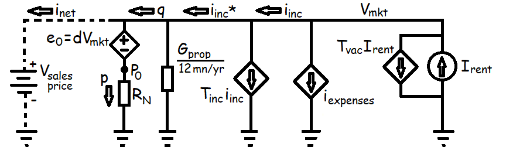

Price Floor (C = 1) Model
The mortgage calculator demonstrated an important result: there is a constant, denoted RN, which relates monthly mortgage payments to inital loan principal and depends only on a geometric series of the interest rate (i) and loan term (N) — most importantly RN is a constant, independent of loan size.
This constant is like , where current (I) is akin to monthly mortgage payments and voltage (E or V) is akin to loan principal. We define variables p to be the monthly mortgage payment and E0 the initial loan principal such that:
This Ohm's law relationship inspires creation of a circuit model for home prices based on monthly cash-flows.
Mortgage Conductance
The overall sales price (Vmkt) is divided into two parts, the initial mortgage principal (P0) plus the down payment (e0), for example a 20% down payment would be d = 0.2. The equivalent conductance of these two in-series components is just a scaled reflection of the mortgage constant itself:
We call the conductance (GM) that results the mortgage conductance.
Nonequilibrium Supply and Demand
If a market prices were such that , i.e. if rents were sufficiently high to cover the entire mortgage payment and all other expenses, then tenants would benefit financially from becoming owners because, for the same monthly rent, they could be building up equity in their home and mortgage.
Therefore, in a well functioning market with credit available, this zero net cash-flow condition should drive rents down or home prices up as renters switch to becoming home owners. We call this obviously below-equilibrium value for a home's market price Vfloor Solving the circuit model for results in:
Although this reference value depends on personal factors, such as credit score (which affects GM) and income tax rate (Tinc), most of the inputs are property specific or local in nature. Snth.us provides a Vfloor* calculator and a series of how-to's for estimating this reference point for an average homebuyer. Asterisks indicate an appropriately weighted average value.
Morgage Preference Factor (C)
When a buyer and seller agree to a sales prices above Vfloor, this is modelled by the buyer becoming a new independent voltage source that makes up for negative monthly cash-flows.
To evaluate the effect of this independent voltage source, we compare this new monthly mortgage payment (p) to the mortgage-free net income after taxes (q).
We define the mortgage preference factor (c) in terms the agreed upon market price relative to Vfloor* of the average homebuyer, . Dividing through by Vfloor* introduces c into the cash-flow ratio equation:
Next, dividing through by GM* extracts a ratio of the buyer's personal credit availability compared to the average homebuyer.
Finally we define a transfer relationship for mortgage preference factors (C vs. c) to shorten the written equation, which is approximately 1-to-1 if local property taxes are significantly smaller than typical mortgage payments.
We call the factor l the personal leverage factor because lower down payment requirements are available to some borrowers and others may choose to pay a higher down payment fraction (d).
Ultimately the market mortgage preference factor (C) is useful because it encapsulates how a property will cash-flow based on its market price and potential income, producing a remarkably stable price-to-rent ratio over time. The initial cash-flow ratio (q/p) is explored in the next article.